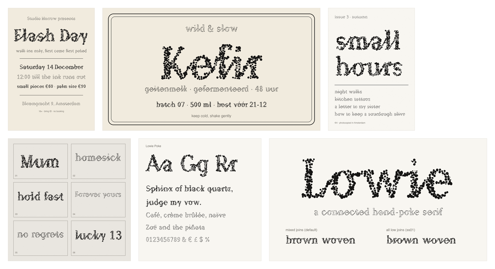

Lowie
A connected serif drawn as hand-poke tattoo dots. Every letter joins the next. Free and open source under the SIL Open Font License.
Download Lowie 0.7Type to try it
koffie & kefir
Three styles
hold fastPoke: loose dots, mixed sizes
slow riversPoke Shaded: dotted edge, sparse dots inside
borrowed lightPoke Line: the outline only
Joins
Joins happen by themselves. b, o, r, v and w hand over along the top, as in handwriting. Stylistic set 1 makes every letter join from the foot.
brown wovendefault
brown wovenall low joins (ss01)
In use

Characters
ABCDEFGHIJKLMNOPQRSTUVWXYZ abcdefghijklmnopqrstuvwxyz 0123456789 àáâäãåçèéêëìíîïñòóôöõùúûüýÿ ÀÁÂÄÃÅÇÈÉÊËÌÍÎÏÑÒÓÔÖÕÙÚÛÜÝ .,:;!?¡¿'"‘’“”()[]/\|-–—_ &@#%£€$+−=×<>*…°^~·